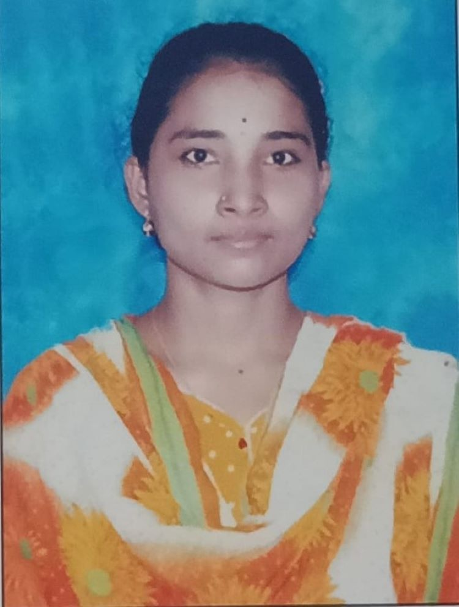

|  | CHAITANYA ADENNAGARIEmail: chaitanyasreenu0201@gmail.comContact: 91+6301042060 |
| Qualification | Board/University | Year | Percentage |
|---|---|---|---|
| EEE | PBR VITS,Kavali,AP,India | 2020-2024 | 85.59 |
| Intermediate | Sri Gayathri Junior College,Badvel,Kadapa,AP,India | 2018-2020 | 95.5 |
| SSC | Z P(Boys) High School,Badvel,Kadapa,AP,India | 2018 | 97 |
| ▪️ | Date of Birth:- | 05-03-2002 |
|---|---|---|
| ▪️ | Father's Name:- | Sreenuvasulu Adennagari |
| ▪️ | Mother's Name:- | Savithri Adennagari |
| ▪️ | Permanent Address:- | D.NO:1/47,Anantharajupuram,Badvel Mandal, Kadapa dist,AP,India |
| ▪️ | Languages Known:- | English and Telugu |
| ▪️ | Interest & Habbits:- | Internet browsing, listening to music, interacting with people |
Place: Badvel
Date:19-09-2024 A.Chaitanya
To go to the Solar System:
Click Here